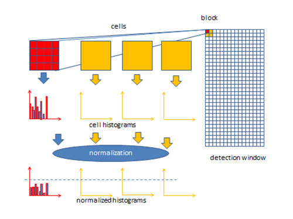

{kind=link}
Abstract
This code constitutes a comprehensive exploration of image feature extraction techniques and classification methodologies for facial recognition tasks, employing the widely used Labeled Faces in the Wild (LFW) dataset. The code begins by fetching and inspecting the dataset, revealing essential information such as the number of images, their sizes, and the unique classes present. Subsequently, it delves into various feature extraction techniques, including Linear Binary Pattern (LBP), Histogram of Oriented Gradients (HoG), and convolutional features, each implemented both manually and utilizing existing libraries. For LBP, the code presents a manual implementation alongside the usage of the local_binary_pattern function from the scikit-image library, demonstrating the versatility and efficiency of established libraries. HoG features are extracted by computing gradient magnitudes and orientations, followed by histogram computation to capture the distribution of gradients in the image. The code further explores convolutional features using custom kernels for vertical and horizontal edge detection, as well as a Gabor filter kernel for texture analysis, showcasing the flexibility of convolutional techniques in capturing diverse image characteristics. Additionally, the code provides a glimpse into the classification aspect by employing Support Vector Machines (SVM) and K-Nearest Neighbors (KNN) algorithms to classify facial images based on the extracted features. Evaluation metrics such as accuracy can be computed to assess the performance of the classification models, providing insights into their effectiveness in recognizing faces from the LFW dataset. By offering a detailed examination of feature extraction techniques and classification algorithms, this code serves as a valuable resource for researchers, practitioners, and enthusiasts seeking to understand and implement facial recognition systems. It not only demonstrates the efficacy of different methods but also encourages experimentation and customization to suit specific requirements and domains.
Keywords: face-recognition, cnn, lbp, hog, feature-extraction
The Problem Statement
Face Identification: Identify a face image by classifying to one of K classes.
Extract LBP, HoG
and CNN Features using the code provided and compare different techniques.
Dataset: https://www.kaggle.com/datasets/jessicali9530/lfw-dataset
Different Techniques

-
Local Binary Pattern (LBP)
- Description: LBP is a texture descriptor used for classifying and recognizing textures in images. It compares the intensity of each pixel with its surrounding pixels and encodes the result into binary patterns.
- Working Principle: For each pixel in the image, LBP compares its intensity value with the values of its neighboring pixels. It generates a binary pattern for each pixel based on these comparisons.
- Feature Representation: LBP generates a histogram of these binary patterns, capturing the distribution of texture information in the image. The histogram serves as a feature vector for tasks such as texture classification and object detection.
-
Histogram of Oriented Gradients (HoG)
 - Description: HoG is a feature descriptor used for object detection and recognition in images. It computes the distribution of gradient orientations in localized regions of the image.
- Working Principle: HoG divides the image into small, overlapping cells and calculates the gradient magnitude and orientation within each cell. It constructs a histogram of gradient orientations to capture shape and structure information.
- Feature Representation: The histogram of gradient orientations serves as a feature vector that characterizes the shape and structure of objects in the image. HoG is effective for tasks such as pedestrian detection and vehicle detection.
-
Convolutional Neural Networks (CNN)
- Description: CNNs are deep learning models designed for processing visual data. They consist of convolutional layers that automatically learn hierarchical features from raw pixel values.
- Working Principle: CNNs use convolutional layers to convolve learnable filters across the input image, extracting local patterns and features. Pooling layers reduce spatial dimensions, and fully connected layers combine features for classification.
- Feature Representation: CNNs learn hierarchical representations of features directly from raw pixel values. They achieve state-of-the-art performance in tasks such as image classification, object detection, and semantic segmentation.
Video
Report
|
Exploring Image Classification & Facial Recognition Techniques: A Comparative Analysis of LBP, HoG, and CNN Features |
Code Preview